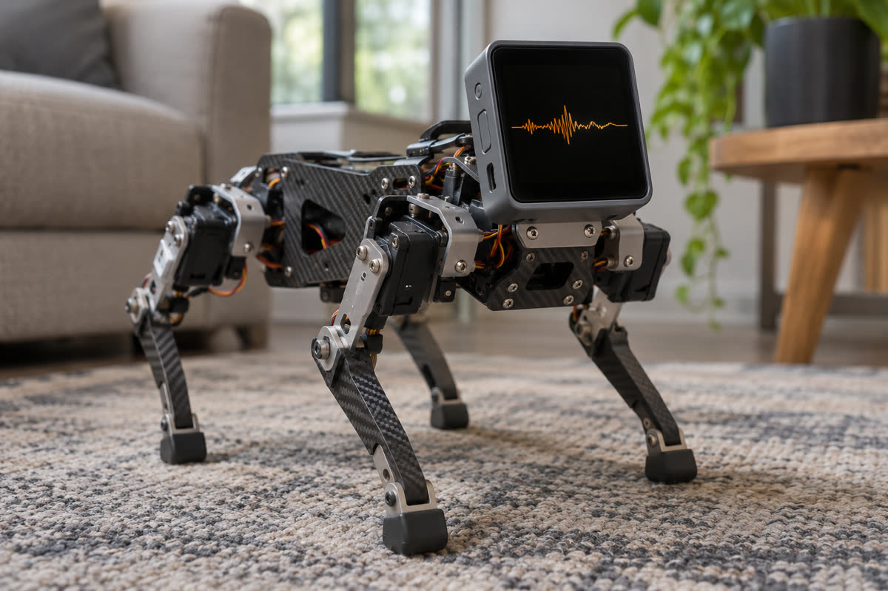
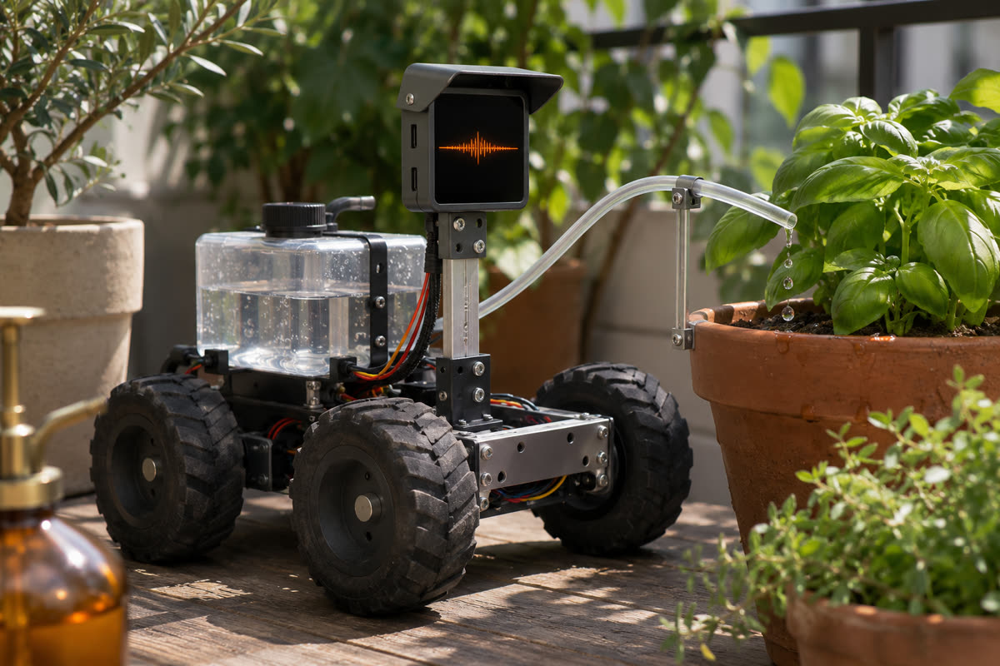

E se ele ganhar um corpo?
A CoreS3 Lite pode ser a cabeça e o rosto de um robô que anda, gira ou faz tarefas: ela ouve, fala, vê e mostra; a IA entende e decide; o corpo se mexe e cuida da própria segurança. São ideias: nada disto foi construído. As imagens são ilustrações.
Lista fechada de comandos
A IA só escolhe entre ações conhecidas, com limite (andar no máximo 50 cm por vez). O servidor descarta o resto. Fala nunca vira código.
Freio no corpo, não na IA
A resposta leva uns 7 s. Quem para antes de bater é o sensor de distância do próprio kit, em milissegundos.
Energia do corpo
A bateria da placa é pequena. A cabeça se alimenta pela bateria do kit, pelo USB-C.

1. Humanoide de oficina
“Acena para a visita.” A IA escolhe um gesto gravado (acenar, apontar, dançar) e fala junto. Bom para aula e apresentação.

2. Carrinho que acompanha
“Vem comigo.” A placa segue o seu rosto; a IA escolhe o rumo por fotos; o carrinho freia sozinho. O mais fácil de começar.

3. Cão-robô
“Senta.” “Dá a pata.” O kit já sabe andar; a cabeça reconhece o dono e dá voz ao personagem. O que mais encanta crianças.

4. Braço que ajuda na mesa
“Me passa a caneta azul.” A IA acha a caneta na foto e o braço pega. A tarefa física mais útil, e a mais difícil: pede calibrar câmera e braço.

5. Cabeça que vira para quem fala
Dois servos: a placa acha o rosto e a base gira para olhar você. O primeiro passo mais barato e seguro.

6. Jardineiro de varanda
“Rega o manjericão.” A IA vê qual vaso está seco; o carrinho vai até ele e liga a bomba alguns segundos.
Ordem sugerida: 5 → 2 → 3 ou 1 → 4 ou 6. Texto completo, com o desenho de cada um, em IDEIAS-CORPOS.md.